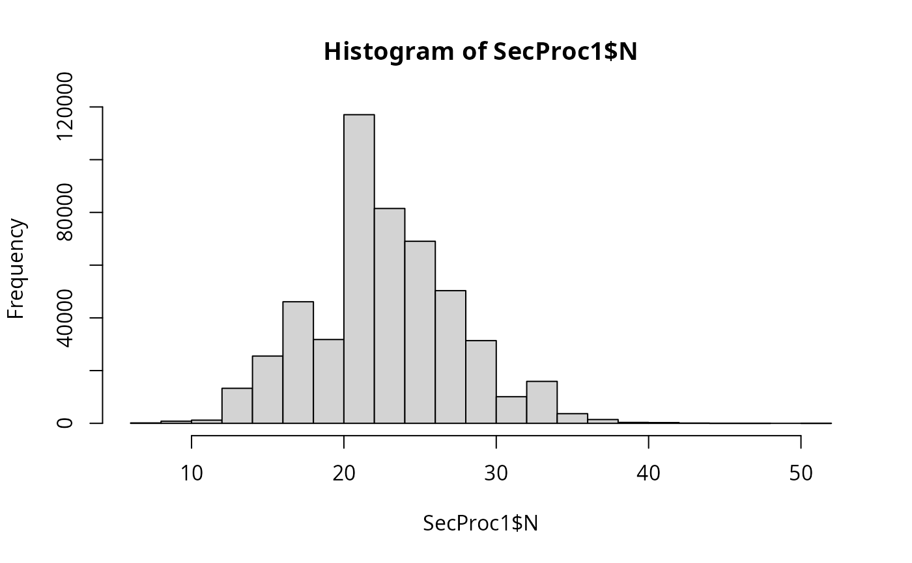
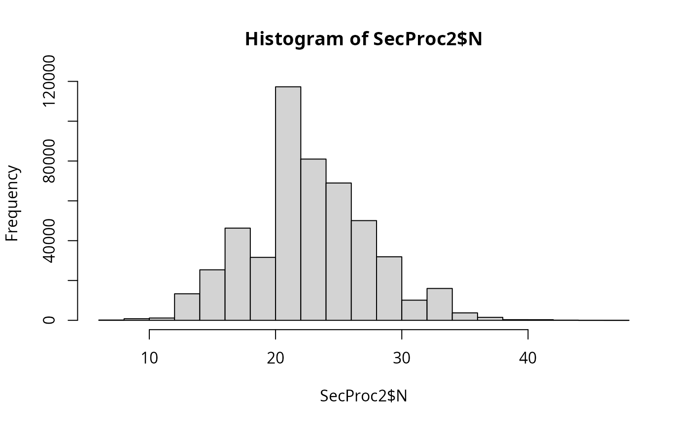

Storage of raw fish (whole or fillets) during processing
Source:R/sfRawFishStorage.R
sfRawFishStorage.RdThe function sfRawFishStorage() simulates the growth of L. monocytogenes in whole fish before any short storage, such as
the holding time before filleting at primary processing, or in fish fillets during holding time before secondary processing; and is based on the
function sfGrowthLPD(). The algorithm is built upon two secondary models: one for lag-phase duration, and the other for growth rate,
both as functions of temperature, taken from @Jia2020;textualqraLm. Log-linear growth is assumed until reaching
the maximum population density MPD. Pert distributions represent the lot-specific variability in holding time and temperature of raw fish.
Usage
sfRawFishStorage(
data = list(),
unitSize = NULL,
nLots = NULL,
sizeLot = NULL,
MPD = NULL,
tempMin,
tempMode,
tempMax,
timeMin,
timeMode,
timeMax
)Arguments
- data
a list of four elements:
- N
(CFU) A matrix containing the numbers of L. monocytogenes on whole fish before filleting, from contaminated lots;
- ProbUnitPos
Probability of individual lots being contaminated (vector);
- P
Prevalence of contaminated lots (scalar);
- workDone
The work done by bacteria.
- unitSize
(g) Weight of a fish unit, whole fish or fish fillet (scalar, vector or matrix).
- nLots
Number of lots sampled or size of the Monte Carlo simulation (scalar).
- sizeLot
Number of units or portions produced in a lot (scalar).
- MPD
(log10 CFU/g) Maximum population density of L. monocytogenes on/in raw fish (scalar).
- tempMin
(\(^\circ C\)) Minimum value of the Pert distribution of variability about the holding temperature (scalar).
- tempMode
(\(^\circ C\)) Mode value of the Pert distribution of variability about the holding temperature (scalar).
- tempMax
(\(^\circ C\)) Maximum value of the Pert distribution of variability about the holding temperature (scalar).
- timeMin
(h) Minimum value of the Pert distribution of variability about the holding time (scalar).
- timeMode
(h) Mode value of the Pert distribution of variability about the holding time (scalar).
- timeMax
(h) Maximum value of the Pert distribution of variability about the holding time (scalar).
Value
A list of four elements:
- N
(CFU) A matrix containing the numbers of L. monocytogenes on whole fish after the holding time, from contaminated lots;
- ProbUnitPos
Probability of individual lots being contaminated (vector);
- P
Prevalence of contaminated lots (scalar);
- workDone
Total work done during the previous stages including the current storage stage (vector).
Note
The default value of MPD=9.2 log10 CFU/g of L. monocytogenes in raw fish was taken from @Jia2020;textualqraLm.
Parameters for the holding time and temperature distributions should be defined by the user an/or tested in scenarios.
In addition to the final L. monocytogenes numbers, the function also returns the lot-specific values of workDone so that the
L. monocytogenes growth could be followed up in subsequent storage stages, if needed.
Author
Ursula Gonzales-Barron ubarron@ipb.pt
Examples
tempMin <- -1.5
tempMode <- 0.5
tempMax <- 3
timeMin <- 0.5
timeMode <- 2
timeMax <- 6
MPD <- 9.2
nLots <- 1000
sizeLot <- 500
unitSize <- 1200
## No previous storage stage
dat <- list(
N = matrix(
rpois(nLots * sizeLot, 23),
nLots,
sizeLot
),
ProbUnitPos = rep(0.15, nLots),
P = 0.4,
unitSize = unitSize
)
SecProc1 <- sfRawFishStorage(dat,
unitSize,
MPD = MPD,
tempMin = tempMin,
tempMode = tempMode,
tempMax = tempMax,
timeMin = timeMin,
timeMode = timeMode,
timeMax = timeMax
)
hist(SecProc1$N)

## Previous storage stage
dat <- list(
N = matrix(rpois(nLots * sizeLot, 23), nLots, sizeLot),
ProbUnitPos = rep(0.15, nLots), workDone = rep(0.5, nLots),
P = 0.4,
unitSize = unitSize
)
SecProc2 <- sfRawFishStorage(dat,
unitSize = 1200,
MPD = MPD,
tempMin = tempMin,
tempMode = tempMode,
tempMax = tempMax,
timeMin = timeMin,
timeMode = timeMode,
timeMax = timeMax
)
hist(SecProc2$N)
